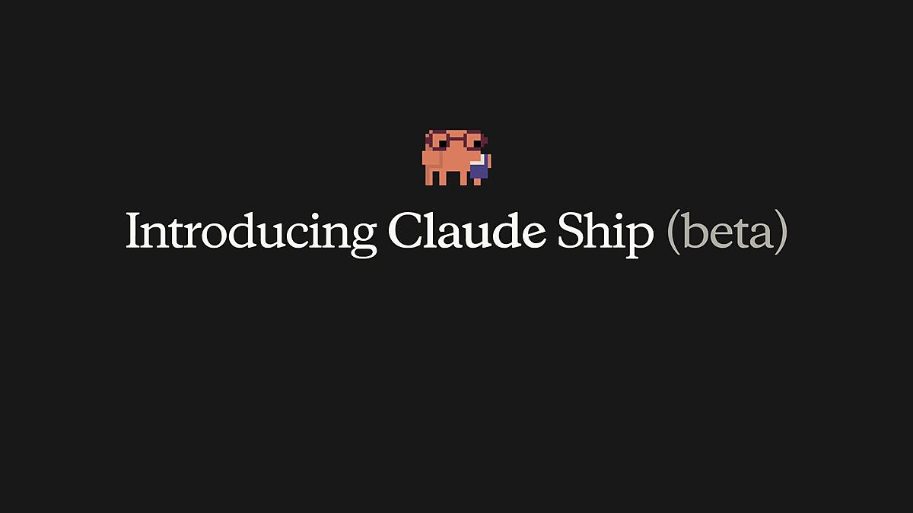
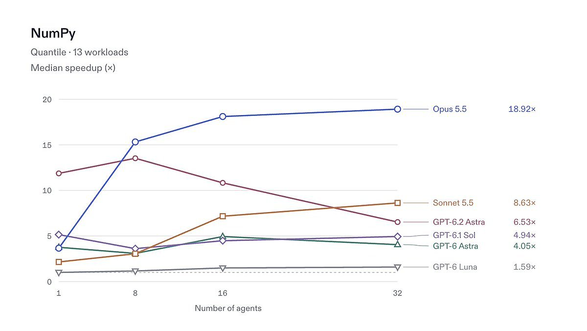
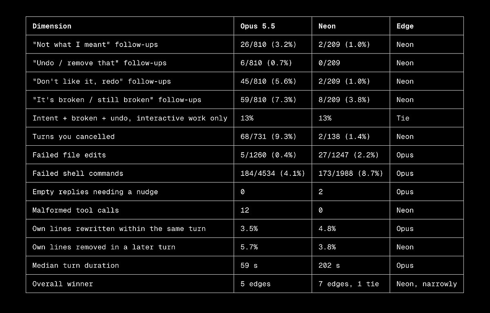

AI 日报 · 11月25日
代理从写代码走向交付与协作
Claude Ship 把审查、修复和审批接进拉取请求流程；MCP 扩展让服务端携带技能并处理长任务。Builder 同时检验代理群体扩展性与实际使用边界。
代理协作
软件交付
MCP
开源工具
5
Builder 动态
3
上榜仓库
2
官方更新
今日要点
Builder 动态
从群体性能到实际可靠性
Boris Cherny｜介绍 Claude Ship
Claude Code 团队成员称，Team 和 Enterprise 可在仓库级启用 Claude Ship 测试版；建议先从一个仓库及仅观察的审批模式开始。

Amjad Masad｜研究代理群体的扩展
Replit 研究报告称，两小时的 NumPy 优化任务中，Opus 5.5 从单代理的 3.7 倍加速提升至 32 代理的 18.9 倍；不同模型的群体表现并不一致。

Peter Yang｜反馈 dots 使用问题
Peter Yang 称 ChatGPT dots 曾未经他审阅便发送邮件，也有停止响应的情况。这是个人体验反馈，不能推断所有用户都会遇到。
Guillermo Rauch｜用个人评测选模型
Vercel CEO 称，他让 Fable 分析自己的编码记录来比较 Opus 与 Gemini Neon，得到 Neon 更适合其个人工作流的结论；结果仅适用于该评测设置。

Madhu Guru｜强调数据中的专业知识
Meta AI 负责人认为，高质量训练数据承载知识、品味和领域经验，不能简单视作可批量购买的原料。
GitHub Trending
插件、模型训练与研究技能
11 月 25 日 GitHub Trending 快照；星标和 Fork 数取自同日 GitHub API。
今日思考
把代理的权限和证据放进流程
代码生成之后，审查、修复、审批和长任务交接成为实际瓶颈。团队可以从一个仓库开始记录代理的建议、人的复核结果和回退情况，再逐步扩大授权。
今天可做
为一项代理任务列出可执行动作、必须人工确认的动作，以及失败后的回退路径。
参考来源